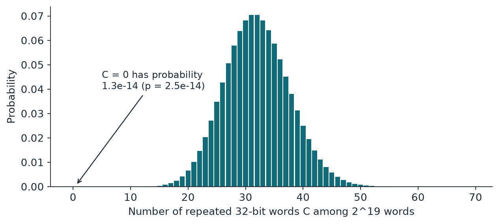

Chapter 13: Additional Tests (IV): Collisions, Memory and Learning¶
The last four statistical tests ask: do exact repeats occur at the rate of the birthday paradox, does the data show long memory under detrended fluctuation analysis, can a model trained on the first half of the sample predict the second half, and do the Hamming weights of successive words depend on each other. The first two have exact or Poisson reference laws; the last two are sequential or held-out designs in which each prediction depends only on the past, so the null law is exact and no correction for the number of patterns tried is needed.
13.1 Birthday-collision test (test U5)¶
The idea in plain words. Put 23 people in a room and two probably share a birthday. That is the famous surprise. So random words should repeat a predictable number of times. Too many repeats suggests a small hidden state or bias. Too few is just as suspicious: some generators never repeat a word until they run through their whole cycle, like a room where somehow nobody ever shares a birthday.
Example 13.1: Birthday-collision test
The classic case: \(m = 23\), 365 days, so \(\lambda = 23 \times 22/(2 \times 365) = 0.693\). The chance of at least one shared birthday is about \(1 - e^{-0.693} = 0.5000\). The exact figure is 0.5073, so the approximation is good.
Now the real thing, on a 2 MiB sample: \(m = 2^{19}\) 32-bit words, so \(\lambda \approx 32\). With 32 repeats, \(p = 1\) (one os.urandom sample showed exactly that). With 50 repeats, the 32-bit p-value is 0.0039, or 0.0077 after Bonferroni. With 0 repeats, it is \(2.5 \times 10^{-14}\), or \(5.1 \times 10^{-14}\) after Bonferroni, and we measured that exact value on RANDU, LFSR32 and xorshift32.
The mathematics. For \(m\) uniform \(w\)-bit words:
- \(w\): the word size, 32 or 64 bits.
- \(m\): the words used, capped at \(2^{19}\) for 32 bits and \(2^{18}\) for 64 bits.
- \(C\): the number of repeated values.
- \(C'\): a Poisson variable with mean \(\lambda\).
- \(\lambda\): the expected number of repeats (the Arratia-Goldstein-Gordon approximation).
At those caps, which need 2 MiB, \(\lambda \approx 32\) for 32 bits and about \(2 \times 10^{-9}\) for 64 bits, so a single 64-bit repeat is damning. On a 1 MiB sample, as in our calibration, \(m\) halves and \(\lambda \approx 8\) for 32 bits.
What it catches and misses. False alarms: 0 of 120. It flagged 21 of 59, the most of any statistical test (20 at the verdict line): 6 raw physical, 13 weak generators, the defective conditioner and parity. Because the stateless conditioner produces repeated hash blocks, this test gave it \(p = 0\). One of the 13 was MT19937 words at \(p = 0.0056\), on one seed only. It looks only at exact repeats at the 4-byte and 8-byte alignments. On 1 MiB, zero repeats gives only \(p = 0.0013\), which fails at 0.01 but stays above the verdict line, so give this test at least 2 MiB. Generators with long periods and no repeat quirks, such as PCG and xoshiro, pass.

13.2 Detrended fluctuation analysis (test U6)¶
The idea in plain words. Turn the data into a walk: take a step up or down for each value, based on how far it is from the average. Now look at windows of different sizes, and measure how far the walk strays from a straight line. For memoryless data, that wobble grows like the square root of the window size, an exponent of one half. Memory changes the exponent. Rather than trust a formula, we keep shuffling the same data, which destroys any order, and see if the original exponent stands out. We stop as soon as the answer is clear: ordinary data is usually settled after a few dozen shuffles, and only a suspicious sample earns the full 1999.
Example 13.2: Detrended fluctuation analysis
Take the values 3, 9, 1, 7, 5, 6, 2, 8, with mean 5.125. The walk is \(-2.125\), 1.75, \(-2.375\), \(-0.5\), \(-0.625\), 0.25, \(-2.875\), 0. After fitting and removing a straight line in each window, the wobble is \(F(4) = 1.449\) and \(F(8) = 1.454\). Eight points only show the steps; you need a longer series to see a slope.
So we ran the shuffling rule on 4096 simulated values, with window sizes 16 to 256. One stream of white noise gave an exponent of 0.511. The tenth shuffle at least as far from one half arrived after just 13 shuffles, so we stopped with \(p = 10/13 = 0.77\). A second stream gave 0.431. It is not exactly 0.5, because short series scatter, and that is the reason we shuffle instead of comparing with 0.5 directly. It took 668 shuffles to reach ten, so \(p = 10/668 = 0.015\), still a pass at 0.01. The running sum of that second stream gave an exponent of 1.524. None of the 1999 shuffles came close, so \(p = 1/2000 = 0.0005\).
The mathematics. Build the walk, detrend it in windows of size \(s\), and fit a slope:
- \(x_i\): the first \(2^{18}\) bytes, and \(\bar{x}\) their mean.
- \(Y_t\): the walk, a running total of how far each byte sits from the mean.
- \(s\): one of 16 window sizes, spaced evenly in log scale from 16 to 16,384.
- \(\hat{Y}_t\): the straight line fitted to \(Y\) in that window.
- \(F(s)\): the typical size of the wobble around those lines.
- \(\hat{\alpha}\): the fitted exponent, about one half for memoryless data.
- \(\hat{\alpha}_b\): the same exponent after shuffle number \(b\).
- \(G_\ell\): how many of the first \(\ell\) shuffles were at least as far from one half as the real data.
- \(h = 10\): the count at which we stop early.
- \(L\): the number of shuffles used when that happens.
- \(B = 1999\): the most shuffles we will ever run.
Under i.i.d. data the sample is exchangeable, so the real exponent is equally likely to rank anywhere among the shuffles. This makes it an exact permutation test, with no distribution assumed. The stopping rule is the sequential Monte Carlo test of Besag and Clifford (Biometrika, 1991), which keeps the p-value valid while saving most of the work on good data. On a clean simulated 1 MiB sample, our routine stopped after 58 shuffles with \(p = 0.17\).
What it catches and misses. False alarms: 0 of 120, with p-values that look uniform. It flagged 6 of 59, all at \(p = 0.0005\) and so below the verdict line: two raw jitter forms and one LCG, each on two seeds, 6 samples in all. The smallest p-value this test can give is \(1/2000 = 0.0005\), which sits only just below the verdict line of 0.000556. So test U6 can reach the verdict line only when none of the 1999 shuffles is as extreme as the data, and even one such shuffle gives \(p = 0.001\), which is above the line. It looks only at memory, so bias alone does not trigger it, because shuffling keeps the byte values and only changes their order. A slow linear drift we added to the 4096-value toy did not stand out either (exponent 0.437, stopped after 303 shuffles at \(p = 0.033\)).
13.3 Held-out learned predictor (test H1)¶
The idea in plain words. Give a student the first half of the exam with the answers. Let them study as long as they like, then freeze what they have learned and test them on the second half, which they have never seen. If they beat a coin toss there, they really did learn something. Because the marking is on unseen data, we do not need to correct for how many patterns the student tried, and they cannot cheat by memorising.
Example 13.3: Held-out learned predictor
Say the frozen model makes 1000 predictions of the top bit and gets 540 right. Then \(P(\text{at least 540 of 1000}) = 0.0062\), or 0.0124 after Bonferroni for the 2 targets, a narrow pass. With 550 right, it is 0.00087, or 0.0017 after Bonferroni, a fail. Note how little edge it takes at scale: at 1 MiB, a hit rate of just 0.5018 on one target reaches the 0.01 line.
For a live toy, we built 131,072 bytes in which each byte's top bit copies the previous byte's top bit 60% of the time and is otherwise a fresh coin, so it matches about 80% of the time. The test got 52,340 of 65,536 top bits right, a hit rate of 0.7986, and \(p = 0\). On the low bit, which we left alone, it got 0.4984 and \(p = 0.80\). On clean bytes of the same size, it got 0.5006 and 0.5029, with an overall \(p = 0.145\).
The mathematics. Predict the top bit and the low bit of byte \(i\) from a 55-feature row \(f_i\). The features are a constant, the 16 previous byte values (scaled), their top bits, their low bits (each as plus or minus 1), and the 6 pairwise products of lags 1 to 4.
- \(F, y\): the features and the target bit (as plus or minus 1), over the first half of the sample (up to \(2^{20}\) rows).
- \(\top\): the transpose, which swaps rows and columns.
- \(\lambda = 10^{-6}\): a small ridge term for stability, and \(I\) the identity matrix.
- \(\hat{y}_i\): the predicted bit for byte \(i\), from the sign of the score.
- \(w\): the fitted weights, frozen before scoring.
- \(H\): the correct predictions in the second half, out of \(N\) (up to \(2^{20}\)).
- \(B\): a binomial variable with the same law.
Each prediction uses only earlier bytes and frozen weights. If the bytes are i.i.d., the target bit is a fair coin, independent of all of that, so \(H\) is exactly binomial, with no approximation. The framework comes from Kelsey, McKay and Sonmez Turan (CHES 2015) and Truong et al. (IEEE TIFS 2019). The test also reports a predictor-based min-entropy estimate, \(-\log_2 \max(P_u, \tfrac{1}{2})\) bits per predicted bit, with \(P_u\) the 99% upper bound on the hit rate.
What it catches and misses. False alarms: 1 of 120 (95% interval 0.02% to 4.6%), consistent with 1%. It flagged 16 of 59 (15 at the verdict line): 8 raw physical, 6 weak generators (the Numerical Recipes LCG words, MINSTD and RANDU), parity, and one os.urandom sample at \(p = 0.0016\), which we read as an ordinary chance result since it stayed above the verdict line. The model is small and mostly linear, and it looks back only 16 bytes. It cannot learn java.util.Random or MT19937, and those passed. A failure is strong evidence, but a pass only says this student could not learn it.
13.4 Hamming-weight dependency (test H2)¶
The idea in plain words. Think of each word as a bag of coins, and its Hamming weight as the number of heads in it. Note whether each of the last few bags came out light, middling or heavy. Then ask: does that pattern tell you anything about the next bag's weight? Some generators pass many tests, yet leave exactly this kind of faint trace. Blackman and Vigna designed this test to find it.
Example 13.4: Hamming-weight dependency
Say that for one signature pattern, 4 bytes landed in the cell, with weights 6, 5, 4, 7. Centred on 4, they add up to \(S = 6\). With variance \(8/4 = 2\) per byte, \(Z = 6/\sqrt{4 \times 2} = 2.12\).
Next the rotation, in a toy with \(k = 1\) and so 3 cells, \(Z = (2.12, -0.40, -1.60)\). Multiplying by the orthogonal matrix gives \((0.069, 2.630, 0.539)\). We drop the first (constant) coefficient. The other two have tails 0.0085 and 0.590, so Sidak over 2 gives \(p = 0.017\). The real test does this over 6560 and 728 coefficients.
The mathematics. Each word goes into one of 3 classes by its weight \(\nu\): below, inside or above a centre band. A block of \(k + 1\) words gives a signature (the classes of the first \(k\) words) and a target (the weight of the last word):
- \(w\): the word size in bits, 8 (with \(k = 8\), band: weight 4) or 32 (with \(k = 6\), band: weights 15 to 17).
- \(c\): a cell, one of the \(3^k\) signatures.
- \(n_c\): the number of blocks in cell \(c\).
- \(S_c\): the total centred weight of the target words in cell \(c\).
- \(Z_c\): that total, scaled to have variance 1 under the null.
- \(M\): an orthogonal matrix, which only rotates, and \(M^{\top}\) its transpose.
- \((M^{\top})^{\otimes k}\): the \(k\)-th Kronecker power of \(M^{\top}\), which applies \(M^{\top}\) once along each of the \(k\) signature positions.
- \(C_j\): the rotated coefficients, and \(j = 0\) is the constant one that we drop.
Signature and target words never overlap, so under i.i.d. data the \(Z_c\) are independent and close to standard normal. An orthogonal rotation of independent standard normals is again independent standard normal. Blackman and Vigna's paper (ACM TOMACS 2022) slides its window over overlapping runs of consecutive words, which is more powerful. Our block variant gives up some power to get an exact independence argument.
What it catches and misses. False alarms: 0 of 120 (95% interval 0 to 3.0%), consistent with 1%. It flagged 13 of 59: 4 raw CPU jitter samples, 8 weak generators (the Numerical Recipes LCG words, MINSTD, RANDU and xorshift32) and parity, the last at \(p = 8.4 \times 10^{-155}\). The honest limit is sample size. The paper's own table (arXiv 2108.13061v3) gives the data its overlapping test needed to reach \(p < 10^{-20}\): \(1 \times 10^{10}\) bytes for xoroshiro128, \(5 \times 10^{12}\) for xoroshiro128+, and \(4 \times 10^{10}\) for a 521-bit Mersenne Twister. MT19937 is not in that table. At our sizes, of a few MiB, this test mainly catches gross weight dependence: MT19937 and xoroshiro128+ both passed here. For those linear generators, test 7 does the job at this sample size.
13.5 Summary¶
- Birthday collisions: the number of repeated \(w\)-bit words among \(m\) uniform words is approximately Poisson with \(\lambda=m(m-1)/2^{w+1}\). Too many repeats and too few are both suspicious.
- Detrended fluctuation analysis uses a sequential permutation test (Besag and Clifford) so that ordinary data stops after a few dozen shuffles while a suspicious sample earns the full 1999.
- Held-out predictor: train on the first half, freeze the weights, score on the second half; under the null every hit is an independent fair coin, so the law is exactly binomial.
- Hamming-weight dependency (Blackman and Vigna) checks whether the weight classes of the last few words predict the next word's weight; an orthogonal rotation keeps the coefficients independent and standard normal.
- The honest limit of H2 is sample size: the published tests needed \(10^{10}\) bytes or more to expose some generators.
13.6 Exercises¶
-
Check the birthday approximation for 23 people in a 365-day year: compute \(\lambda\) and the chance of at least one shared birthday.
Answer
\(\lambda=23\times22/(2\times365)=0.693\). The chance of at least one shared birthday is about \(1-e^{-0.693}=0.5000\); the exact figure is 0.5073, so the approximation is good.
-
For \(m=2^{19}\) 32-bit words, find \(\lambda\). What is \(\lambda\) for a 1 MiB sample, which supplies \(m=2^{18}\) words? What p-value results from zero repeats at the larger size?
Answer
At \(m=2^{19}\): \(\lambda=2^{19}(2^{19}-1)/2^{33}\approx32\). At \(m=2^{18}\): \(\lambda\approx8\). With \(\lambda=32\) and no repeats, \(P(C=0)=e^{-32}=1.3\times10^{-14}\), so the two-sided value is \(2.5\times10^{-14}\) (and \(5.1\times10^{-14}\) after the Bonferroni factor 2).
-
A frozen model predicts the top bit of 1000 bytes and is right 540 times. Find the one-sided tail probability, and the value after Bonferroni for the 2 targets.
Answer
\(P(\text{at least 540 of 1000})=0.0062\), and after the factor 2 it is 0.0124. That is a narrow pass at \(\alpha=0.01\). With 550 right, the tail is 0.00087, or 0.0017 after Bonferroni, which fails.
-
Why does the held-out predictor not need a correction for the number of patterns the model tried?
Answer
The model is trained on the first half and then frozen, and each prediction on the second half depends only on earlier bytes and the frozen weights. Under the null each hit is an independent fair coin, so the number of hits is exactly binomial whatever the model tried during training. The student cannot cheat by memorising, because the marking is on unseen data.
-
What do both too many and too few repeats suggest in the birthday-collision test?
Answer
Too many repeats suggest a small hidden state or bias. Too few are just as suspicious: some generators never repeat a word until they have run through their whole cycle, so zero repeats where about 32 are expected (as for RANDU, LFSR32 and xorshift32) is a failure.